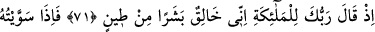
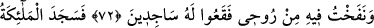
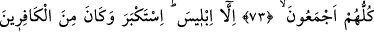
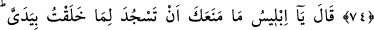
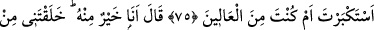
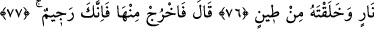
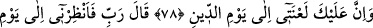
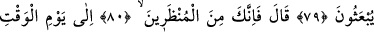
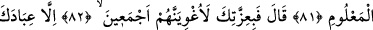
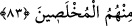

İBLİS SECDE ETMEDİ,
BÜYÜKLÜK TASLADI
71. Rabbin meleklere demişti ki: Ben muhakkak çamurdan bir insan yaratacağım.
72. Onu tamamlayıp, içine de ruhumdan üfürdüğüm zaman, derhal ona secdeye
kapanın!
73. Bütün melekler toptan secde ettiler.
74. Yalnız İblis secde etmedi. O büyüklük tasladı ve kâfirlerden oldu.
75. Allah: Ey İblis! İki elimle yarattığıma secde etmekten seni meneden nedir?
Böbürlendin mi, yoksa yücelerden misin? dedi.
76. İblis: Ben ondan hayırlıyım! Beni ateşten yarattın, onu çamurdan yarattın,
dedi.
77. Allah: Çık oradan (cennetten)! Sen artık kovulmuş birisin.
78. Cezâ gününe kadar lânetim senin üzerindedir! buyurdu.
79. İblis: Ey Rabbim! O halde tekrar diriltilecekleri güne kadar bana mühlet ver,
dedi.
80. Allah: Haydi, sen mühlet verilenlerdensin, buyurdu.
81. Bilinen güne kadar.
82. İblis: Senin mutlak kudretine andolsun ki, hepsini mutlaka azdıracağım, dedi.
83. Onlardan ihlâsa erdirilmiş kulların bir yana,